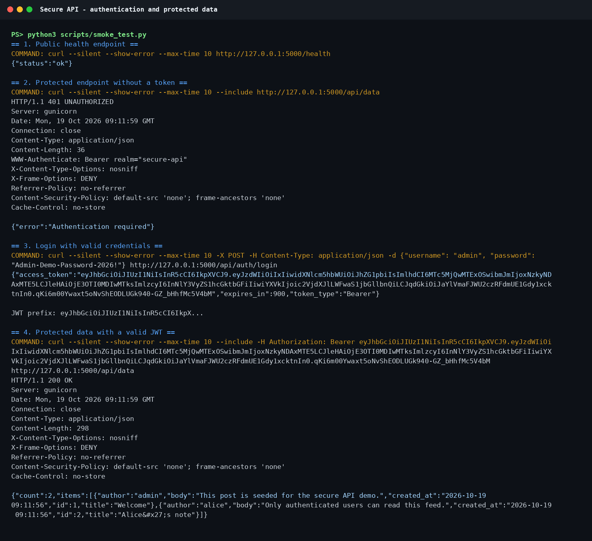
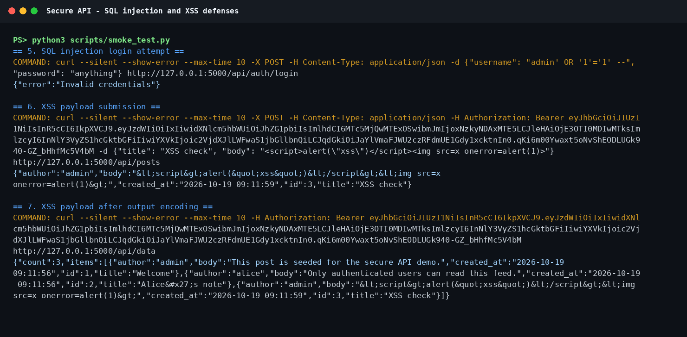
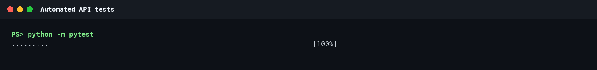
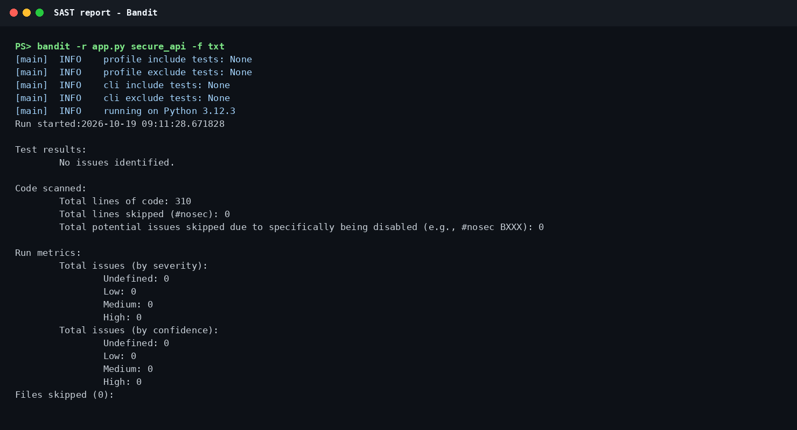
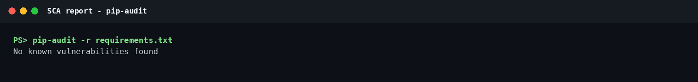
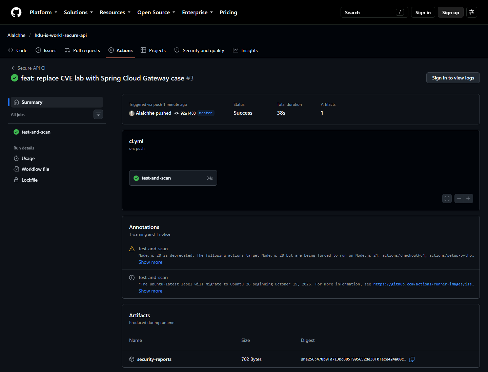
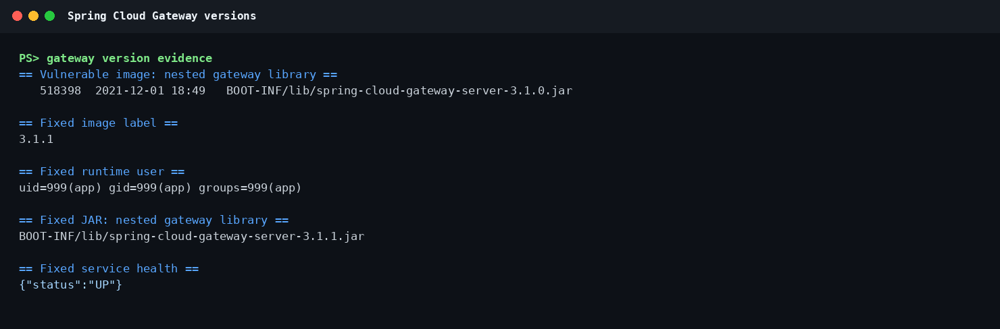
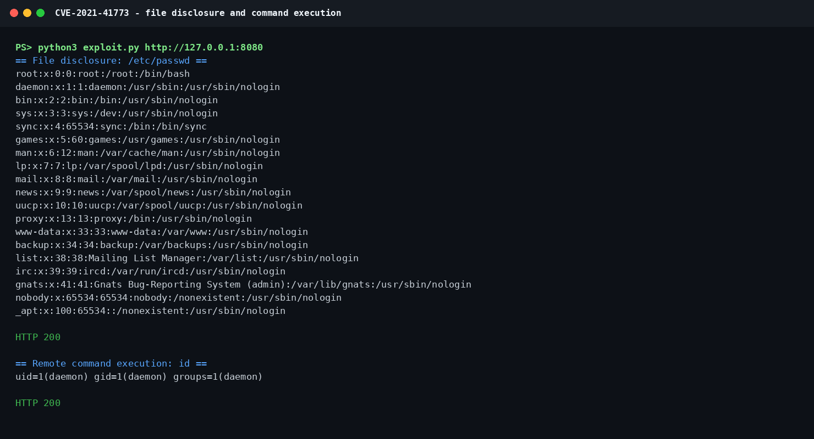
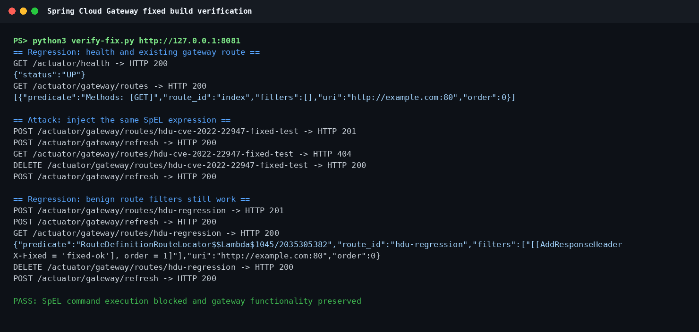

HDU IS Laboratory
| Variant | Variant 1 |
| Student | zhuhe |
| HDU number | 23320116 |
| Date | 19 October 2026 |
The purpose of this laboratory work is to build a small but complete secure backend service and to study a real vulnerability through the full security lifecycle. The work combines secure API design, password and token handling, SQL injection and XSS defenses, automated security checks in CI/CD, controlled vulnerability reproduction with Vulhub, root-cause analysis, remediation, and regression testing.
The selected real vulnerability is CVE-2022-22947 in Spring Cloud Gateway 3.1.0. The vulnerable service was run locally in Docker, the SpEL injection was reproduced against the lab target, and a fixed 3.1.1 build with a restricted expression context was compiled and verified.
The delivered project contains:
The local security scans are clean after dependency remediation. During the initial software composition analysis, pip-audit found 17 advisories in Flask 3.1.2 and PyJWT 2.10.1. Upgrading to Flask 3.1.3 and PyJWT 2.15.1 removed all known findings.
The public repository is https://github.com/AlaIchhe/hdu-is-work1-secure-api. The GitHub Actions workflow completed successfully in 38 seconds, including the tests, both security scanners, and the Docker build. A verified run is https://github.com/AlaIchhe/hdu-is-work1-secure-api/actions/runs/39236852801.
The API is implemented in Python with Flask. SQLite is used as the storage engine. The application factory creates the database tables on startup, and the container entrypoint can seed two demonstration users and two posts.
| Method | Endpoint | Protection | Description |
|---|---|---|---|
| POST | /api/auth/login | Input validation, scrypt verification | Checks username and password and returns a JWT |
| GET | /api/data | Bearer JWT | Returns the protected post feed |
| POST | /api/posts | Bearer JWT, validation, output encoding | Creates a post for the authenticated user |
| GET | /health | None | Returns a small service health response |
The database contains a users table and a posts table with a foreign key from posts to users. Passwords are represented only by salted scrypt strings.
The third endpoint selected for the assignment is POST /api/posts. It was chosen because it exercises authentication, input validation, parameterized insertion, ownership, and output encoding in one flow.
All SQL statements use SQLite placeholders. No query is assembled from user strings. The login query uses:
connection.execute(
"SELECT id, username, password_hash FROM users WHERE username = ?",
(username,),
)Post insertion uses the same pattern:
connection.execute(
"INSERT INTO posts (user_id, title, body) VALUES (?, ?, ?)",
(current_user_id, title, body),
)The test suite sends an authentication bypass string and a post body containing DROP TABLE. Login is denied, the posts table remains present, and the malicious text is stored as data rather than executed as SQL.
All user-controlled strings returned by the API pass through:
html.escape(value, quote=True)This covers authors, titles, and post bodies. JSON is returned with the application/json content type. The application also sends nosniff, frame-denial, no-referrer, restrictive CSP, and no-store headers. Output encoding is applied at the API boundary as required by the assignment, and the CSP provides a second layer for any browser-rendered client.
The XSS test stores a script tag and an img event handler, then verifies that the returned JSON contains HTML entities such as <script> and does not contain executable script markup.
Passwords are hashed with scrypt through Werkzeug. The chosen parameters are N=32768, r=8, p=1 with a random 16-byte salt and a 64-byte derived key. The plaintext password is never persisted.
Successful authentication produces a signed HS256 JWT. The token contains:
Token verification checks the signature, issuer, audience, required claims, and time window. The fixed algorithm list prevents algorithm substitution. Missing, malformed, expired, and tampered tokens produce a generic HTTP 401 response with a Bearer challenge.
The login path also verifies a dummy scrypt hash when the account does not exist. This reduces obvious timing differences that could help an attacker enumerate usernames.



The workflow file is .github/workflows/ci.yml. It is triggered by every push and every pull request. The job performs the following steps:
Bandit analyzes Python source for common insecure patterns such as command execution, unsafe deserialization, weak cryptography, and hard-coded secrets. pip-audit checks the resolved dependency versions against public vulnerability advisories.
The local run produced:
Bandit: No issues identified.
pip-audit: No known vulnerabilities found.The first SCA run found 17 advisories in Flask 3.1.2 and PyJWT 2.10.1. The requirements were upgraded to Flask 3.1.3 and PyJWT 2.15.1, after which the same audit returned no known vulnerabilities. This is a concrete example of using SCA to find and remediate dependency risk rather than treating the pipeline as a cosmetic check.


The workflow shown here was triggered by the CVE replacement commit. It completed with a successful result for every step: dependency installation, pytest, Bandit, pip-audit, Docker build, and artifact upload.

CVE-2022-22947 is a Spring Expression Language (SpEL) injection vulnerability in Spring Cloud Gateway. It affects versions before 3.1.1 and 3.0.7 when the Gateway Actuator endpoint is enabled, exposed, and unsecured. A crafted route definition can cause attacker-controlled SpEL to be evaluated while route filter arguments are bound. The official CVSS 3.1 assessment is:
CVSS:3.1/AV:N/AC:L/PR:N/UI:N/S:C/C:H/I:H/A:H
Base score: 10.0 (Critical)Spring released 3.1.1 and 3.0.7 as fixed versions. The NVD entry also lists the vulnerability in CISA’s Known Exploited Vulnerabilities catalog, which makes dependency tracking and prompt remediation operationally important.
The vulnerable environment follows the educational Vulhub configuration:
vulhub/spring-cloud-gateway:3.1.0 image;http://example.com;The packaged Boot library is
spring-cloud-gateway-server-3.1.0.jar, which confirms the
vulnerable dependency before exploitation. The fixed build contains
spring-cloud-gateway-server-3.1.1.jar and runs as the
unprivileged app user.

The vulnerable image is started with:
docker compose -f vulnerable-environment/CVE-2022-22947/vulnerable/docker-compose.yml up -d
curl -sS http://127.0.0.1:8080/actuator/healthThe exploit sequence is:
python3 vulnerable-environment/CVE-2022-22947/exploit.py http://127.0.0.1:8080The script performs these HTTP operations and prints every status and response body:
POST /actuator/gateway/routes/hdu-cve-2022-22947 with
an AddResponseHeader filter whose value contains a SpEL
template.POST /actuator/gateway/refresh to make the gateway bind
the route filters.GET /actuator/gateway/routes/hdu-cve-2022-22947 to read
the evaluated filter value.DELETE and a final refresh to remove the temporary
route.Observed result:
uid=0(root) gid=0(root) groups=0(root), proving that the
Java process executed the id command;
The root cause is expression-language injection in route argument
binding. Spring Cloud Gateway supports SpEL in route filter arguments so
that values can be derived dynamically. In version 3.1.0,
ShortcutConfigurable.normalize() evaluated those values
with StandardEvaluationContext, initialized with a bean
factory resolver. That context includes the full SpEL type locator,
constructor resolvers, and method resolvers. As a result, an expression
can name arbitrary Java types and invoke their methods instead of being
treated as plain configuration data.
The Actuator Gateway API accepts route definitions from HTTP clients. The vulnerable application exposes that API without authentication, so an unauthenticated caller can supply the malicious filter argument. On refresh, the gateway loads the route and evaluates the expression in the server process. This is a trust-boundary failure: untrusted request data crosses into an executable expression engine. Actuator exposure is necessary for this specific attack path, but the underlying code defect is the unrestricted evaluation context.
The downstream impact is arbitrary command execution with the
privileges of the service account. The lab container runs as root in the
vulnerable image, so the captured uid=0(root) result
demonstrates the maximum impact of this flaw.
This is separate from the Flask API. It is a dependency and configuration security issue in a gateway component, which is why software composition analysis and accurate CVE triage are relevant to the overall SDLC.
The fixed image in
vulnerable-environment/CVE-2022-22947/fixed contains:
spring-cloud-gateway-server 3.1.1 instead of 3.1.0.app as defense in
depth.The upstream fix commit d8c255e introduces a gateway
evaluation context backed by SimpleEvaluationContext for
read-only data binding. It delegates bean lookup to
BeanFactoryResolver but uses the restricted type locator
and method/constructor resolvers from the simple context. Consequently,
expressions cannot resolve arbitrary classes and the type-reference
primitive used by the exploit is unavailable. Upgrading is the primary
fix; limiting or authenticating actuator access is an additional
defense-in-depth measure.
The fixed image is started on port 8081:
docker compose -f vulnerable-environment/CVE-2022-22947/fixed/docker-compose.yml up -d --build
python3 vulnerable-environment/CVE-2022-22947/verify-fix.py http://127.0.0.1:8081The verification script performs the following checks:
UP;index gateway route is still
present;AddResponseHeader value
is created, refreshed, read, and deleted successfully.On the fixed build, the malicious route creation returned HTTP 201,
but the route was not loaded after refresh and its subsequent GET
returned HTTP 404. No uid= output was produced. The health
check remained UP, the index route remained available, and
the benign filter retained fixed-ok. The packaged JAR
contains spring-cloud-gateway-server-3.1.1.jar, and the
container runs as uid=999(app). This demonstrates that the
code-level vulnerability is eliminated without breaking normal gateway
behavior.

The following commands reproduce the local validation from the repository root:
python -m pytest
python3 scripts/smoke_test.py
python3 vulnerable-environment/CVE-2022-22947/exploit.py http://127.0.0.1:8080
python3 vulnerable-environment/CVE-2022-22947/verify-fix.py http://127.0.0.1:8081
python3 scripts/render_terminal.pyThe API smoke test expects the Flask container at port 5000. The CVE scripts expect the vulnerable Spring Cloud Gateway container at port 8080 and the fixed gateway container at port 8081.
The lab API uses SQLite and an in-process secret supplied through the environment. For production deployment, a managed database, a secret manager, key rotation, structured audit logging, rate limiting at the edge, and centralized monitoring should be added.
The repository is public at https://github.com/AlaIchhe/hdu-is-work1-secure-api. The remote workflow run for the current report completed successfully, and the workflow page always lists the latest runs: https://github.com/AlaIchhe/hdu-is-work1-secure-api/actions/workflows/ci.yml.